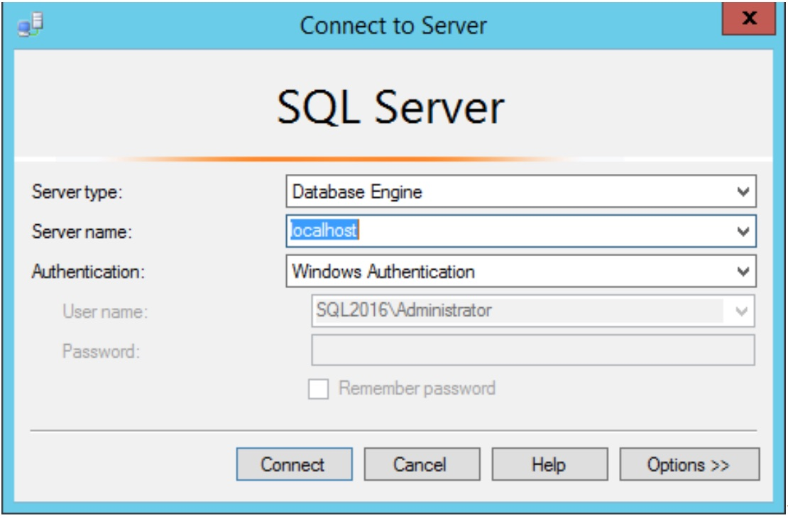
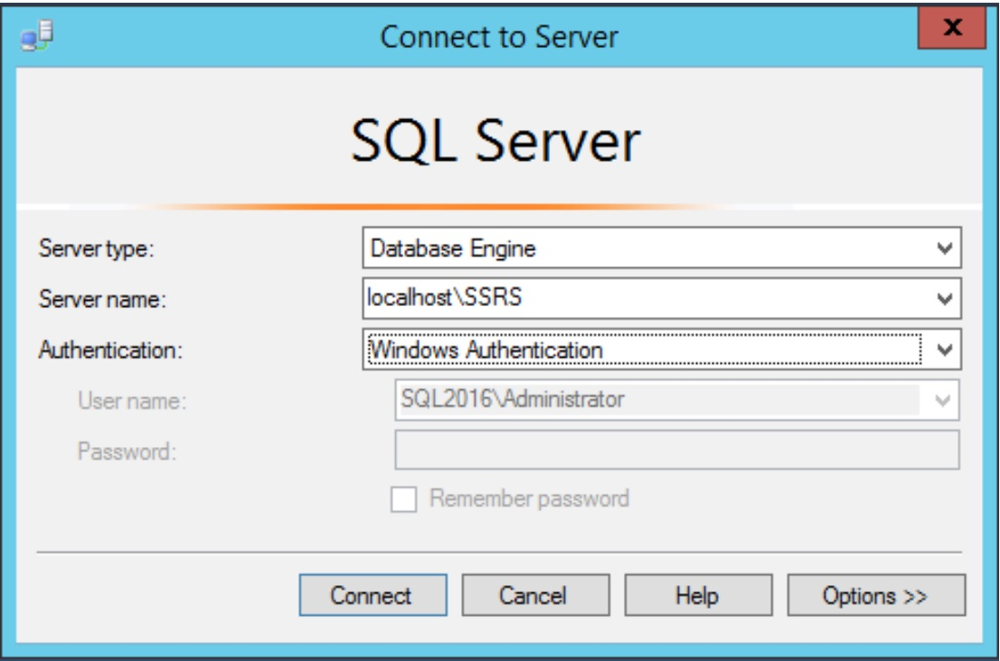

Cannot connect to SQL Server
You receive an error message that states that you cannot connect to localhost.

Review Configuration Properties
- Search for a program called SQL Server 2016 Configuration Manager. You may want to pin this program to your taskbar.

- If you are asked if it is OK for this program to change settings on your computer, say OK.
- Click SQL Server Services to view the services installed. In my case, they are all shut down.

- Find the service called SQL Server (instance name) in the list. I have two SQL Server instances. You will probably have just one.

- Notice the names in the parentheses. These are the instance names. When you see MSSQLSERVER, that means the default instance. Anything else if a named instance. If you have a named instance, you will need that information when you connect.
Start the Server
- Right-click on the service and select Start.
- Once the SQL Server starts up, you should see the red square turn into a green arrow.

Determine the Connection Name
- To connect to your SQL Server, you need to know the name. For a locally installed instance, you can use one of these instead of the computer name: localhost, (local), or . .
- If you have a named instance, you will need to follow the computer name with a backslash and the instance name.

Try Connecting Again
- To connect to SQL Server, launch SQL Server Management Studio (SSMS). Make sure that Database Engine and Windows Authentication are selected.


Don’t Click <Browse for More...>
- Avoid clicking this option. It will try to browse for networks to find SQL Servers. It could take a long time.
Change start up properties
- If you are concerned that SQL Server takes too many resources when you don’t need it, you can change the properties so that it just runs when you need it.
- Open the SQL Server Configuration Manager. Right-click on the service that you don’t want to start up automatically and select Properties.
- On the Service tab, change the Start Mode to Manual.

- When you want to run SQL Server, you’ll have to launch Configuration Manager to start up the service.